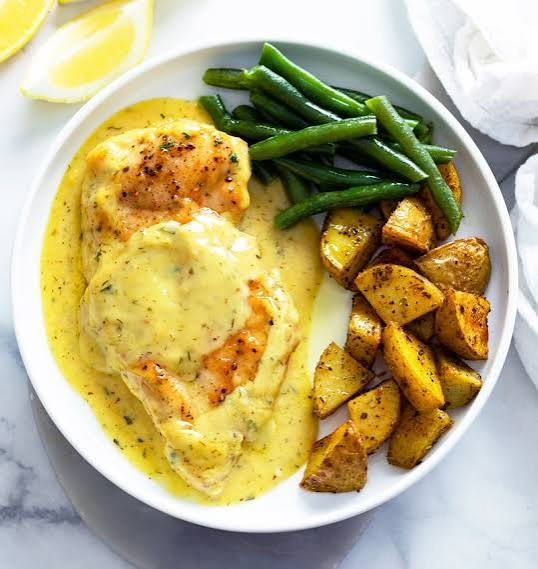

Honey Mustard Chicken

Description
This slow cooker honey mustard chicken takes only minutes to prepare,
and just a couple of hours to cook.
The saucy shredded chicken makes a terrific sandwich,
or you can serve it over rice or in a chicken salad.
Ingredients
- 1/2 teaspoon salt
- 1/2 teaspoon freshly ground black pepper
- 1/2 teaspoon paprika
- 1/2 teaspoon onion powder
- 1 1/2 pounds skinless, boneless chicken breasts
- 1/4 cup honey
- 1/4 cup plus 1 to 2 tablespoons Dijon mustard
- 2 cloves garlic, minced
Steps
- Combine salt, pepper, paprika, and onion powder in a small bowl.
Rub spice mixture evenly over chicken breasts.
- Whisk together the honey, Dijon mustard, and garlic in another bowl.
- Place the seasoned chicken in a 4-quart slow cooker. Pour honey-mustard mixture over the chicken.
- Cover and cook on Low until chicken is tender and an instant-read thermometer
inserted into the thickest portion registers 165 degrees F (74 degrees C), 2 hours 30 minutes.
- Transfer chicken to a cutting board and shred with 2 forks.
Return shredded chicken to the slow cooker and stir to coat with sauce.
Stir in 1 to 2 tablespoons additional Dijon mustard to taste before serving.
Home